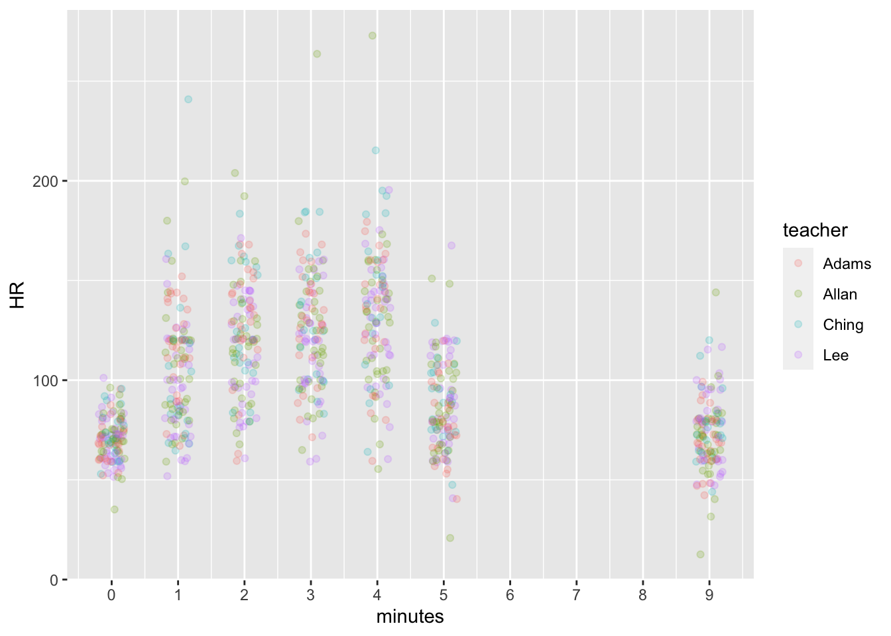
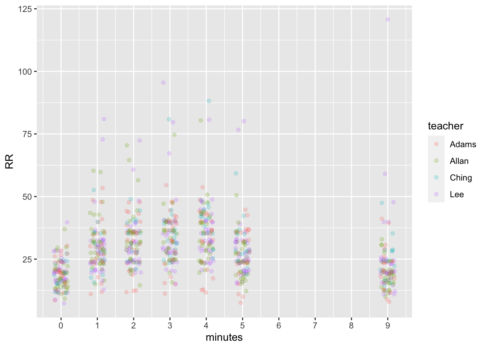
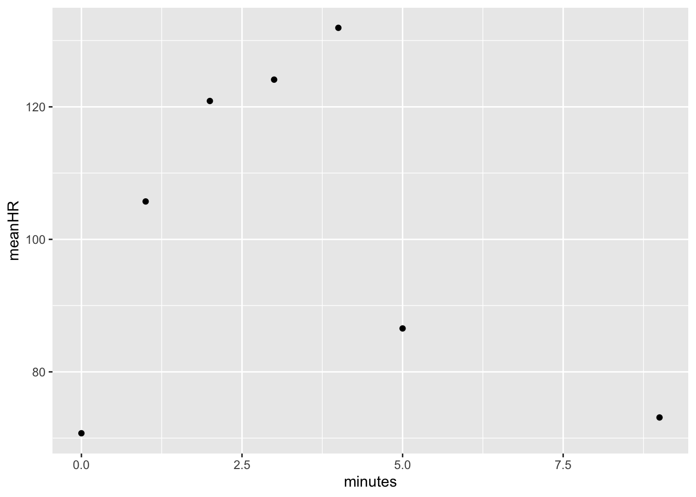
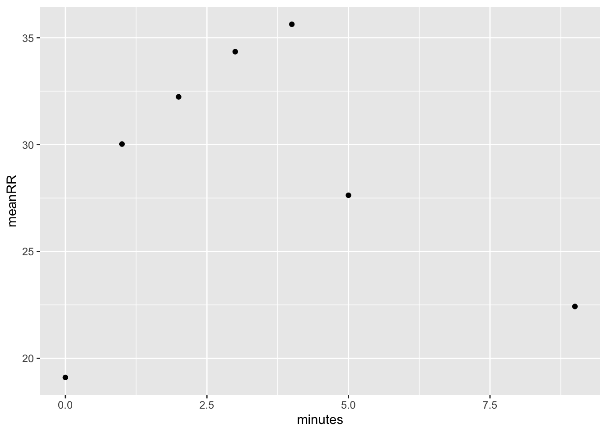
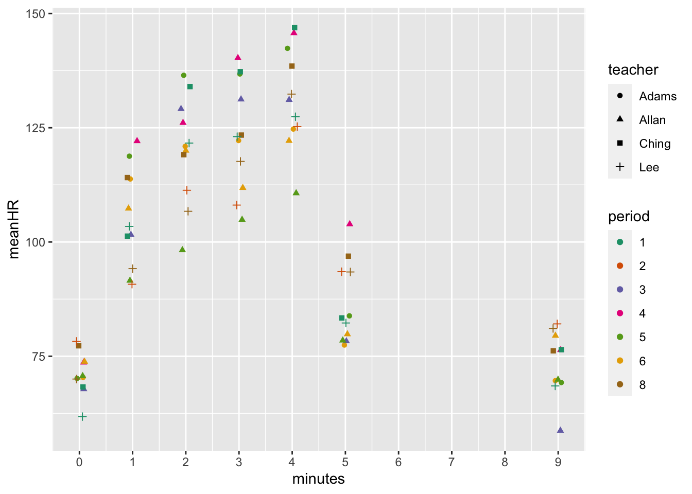
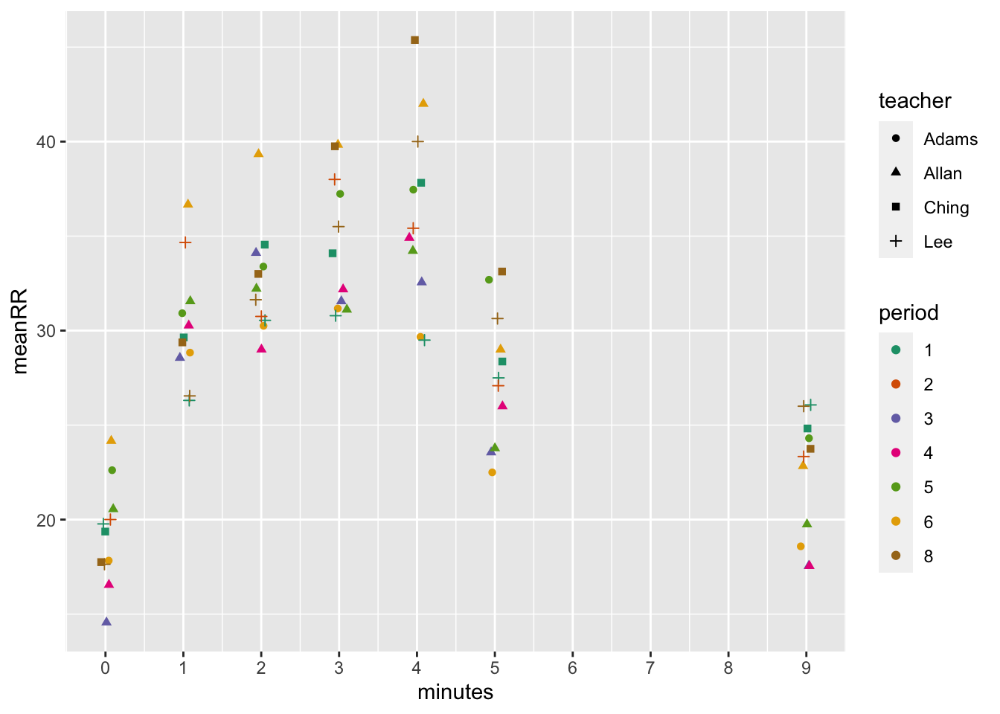

Introduction
Students in Biology classes at Iolani School collected data on heart rate and respiratory rate before, during, and after exercise. We describe the results below.
Methods
library("tidyverse") # Software library used for data cleaning and analysis.## ── Attaching packages ─────────────────────────────────────── tidyverse 1.3.1 ──## ✓ ggplot2 3.3.5 ✓ purrr 0.3.4
## ✓ tibble 3.1.4 ✓ dplyr 1.0.7
## ✓ tidyr 1.1.3 ✓ stringr 1.4.0
## ✓ readr 2.0.1 ✓ forcats 0.5.1## ── Conflicts ────────────────────────────────────────── tidyverse_conflicts() ──
## x dplyr::filter() masks stats::filter()
## x dplyr::lag() masks stats::lag()I received a spreadsheet with two types of data, both in wide format. I separated these into separate tables in the spreadsheet software.
hr <- read_csv("/Users/mching/Documents/miniature-journey/content/datasets/bio_hr.csv")## Rows: 176 Columns: 9## ── Column specification ────────────────────────────────────────────────────────
## Delimiter: ","
## chr (2): Period, initials
## dbl (7): t0, t1, t2, t3, t4, t5, t9##
## ℹ Use `spec()` to retrieve the full column specification for this data.
## ℹ Specify the column types or set `show_col_types = FALSE` to quiet this message.rr <- read_csv("/Users/mching/Documents/miniature-journey/content/datasets/bio_rr.csv")## Rows: 176 Columns: 9## ── Column specification ────────────────────────────────────────────────────────
## Delimiter: ","
## chr (2): Period, initials
## dbl (7): t0, t1, t2, t3, t4, t5, t9##
## ℹ Use `spec()` to retrieve the full column specification for this data.
## ℹ Specify the column types or set `show_col_types = FALSE` to quiet this message.I first checked for students with the same initials within the same class (teacher and period).
hr %>% mutate(pdinit = paste(Period, initials)) %>%
group_by(pdinit) %>%
summarize(npdinit = n()) %>% arrange(-npdinit)## # A tibble: 139 × 2
## pdinit npdinit
## <chr> <int>
## 1 Allan 6 NA 10
## 2 Allan 5 NA 7
## 3 Allan 3 NA 5
## 4 Allan 4 NA 5
## 5 Lee 8 NA 5
## 6 Ching 1 NA 4
## 7 Lee 2 NA 4
## 8 Adams 5 NA 3
## 9 Adams 6 NA 2
## 10 Lee 1 NA 2
## # … with 129 more rowsSince there were none (other than blank rows of NAs), I made the wide data into long data so they could be joined.
hr <- hr %>% pivot_longer(cols = starts_with("t"), names_to = "minutes",
names_prefix = "t",
values_to = "HR")
rr <- rr %>% pivot_longer(cols = starts_with("t"), names_to = "minutes",
names_prefix = "t",
values_to = "RR")
dat <- full_join(rr, hr, by = c("Period", "initials", "minutes"))
glimpse(dat)## Rows: 2,814
## Columns: 5
## $ Period <chr> "Ching 1", "Ching 1", "Ching 1", "Ching 1", "Ching 1", "Ching…
## $ initials <chr> "JO", "JO", "JO", "JO", "JO", "JO", "JO", "MT", "MT", "MT", "…
## $ minutes <chr> "0", "1", "2", "3", "4", "5", "9", "0", "1", "2", "3", "4", "…
## $ RR <dbl> 15, 32, 40, 32, 40, 24, 28, 12, 20, 24, 24, 28, 20, 16, 28, 3…
## $ HR <dbl> 66, 88, 162, 100, 132, 88, 80, 88, 120, 140, 152, 152, 107, 8…dat$minutes <- as.integer(dat$minutes)I separated the Period column into teacher and period
dat <- dat %>% separate(Period, c("teacher", "period"))Results
All data
Since there are probably no differences between students in each class, I reported the combined data first.
There are quite a few outliers when we plot every data point.
dat %>% group_by(minutes) %>%
ggplot(aes(x = minutes, y = HR, color = teacher)) +
geom_point(alpha = 0.2, position = position_jitter(width = 0.2, height = 1)) +
scale_x_continuous(breaks = seq(0,10,1))## Warning: Removed 1970 rows containing missing values (geom_point).
dat %>% group_by(minutes) %>%
ggplot(aes(x = minutes, y = RR, color = teacher)) +
geom_point(alpha = 0.2, position = position_jitter(width = 0.2, height = 1)) +
scale_x_continuous(breaks = seq(0,10,1))## Warning: Removed 2009 rows containing missing values (geom_point).
When we look at means however, the outliers disappear and we are left with pretty nice results.
dat %>% group_by(minutes) %>%
summarize(meanHR = mean(HR, na.rm = T),
sdHR = sd(HR, na.rm = T),
meanRR = mean(RR, na.rm = T),
sdRR = sd(RR, na.rm = T))## # A tibble: 7 × 5
## minutes meanHR sdHR meanRR sdRR
## <int> <dbl> <dbl> <dbl> <dbl>
## 1 0 70.7 11.4 19.1 5.74
## 2 1 106. 30.8 30.0 11.1
## 3 2 121. 29.0 32.2 10.6
## 4 3 124. 30.6 34.3 12.8
## 5 4 132. 33.9 35.6 11.9
## 6 5 86.6 23.5 27.6 10.5
## 7 9 73.1 18.6 22.4 12.4dat %>% group_by(minutes) %>%
summarize(meanHR = mean(HR, na.rm = T)) %>%
ggplot(aes(x = minutes, y = meanHR)) +
geom_point()
dat %>% group_by(minutes) %>%
summarize(meanRR = mean(RR, na.rm = T)) %>%
ggplot(aes(x = minutes, y = meanRR)) +
geom_point()
Data grouped by Teacher and Period
Grouping data by teacher and period was one way to see if there were differences among these groups. It wasn’t obvious whether there were any differences.
dat %>% group_by(teacher, minutes) %>%
summarize(meanHR = mean(HR, na.rm = T),
meanRR = mean(RR, na.rm = T)) %>%
arrange(minutes, teacher)## `summarise()` has grouped output by 'teacher'. You can override using the `.groups` argument.## # A tibble: 28 × 4
## # Groups: teacher [4]
## teacher minutes meanHR meanRR
## <chr> <int> <dbl> <dbl>
## 1 Adams 0 70.3 20.3
## 2 Allan 0 71.2 18.4
## 3 Ching 0 72.6 18.7
## 4 Lee 0 69.6 19.2
## 5 Adams 1 116. 29.9
## 6 Allan 1 106. 31.3
## 7 Ching 1 107. 29.5
## 8 Lee 1 96.6 29.2
## 9 Adams 2 128. 31.9
## 10 Allan 2 119. 32.9
## # … with 18 more rowsI plotted the means by classes for heart rate…
dat %>% group_by(teacher, period, minutes) %>%
summarize(meanHR = mean(HR, na.rm = T)) %>%
ggplot(aes(x = minutes, y = meanHR, color = period, shape = teacher)) +
geom_point(position=position_jitter(width=.1)) +
scale_x_continuous(breaks = seq(0,10,1)) +
scale_color_brewer(palette = "Dark2")## `summarise()` has grouped output by 'teacher', 'period'. You can override using the `.groups` argument.
…and respiratory rate.
dat %>% group_by(teacher, period, minutes) %>%
summarize(meanRR = mean(RR, na.rm = T)) %>%
ggplot(aes(x = minutes, y = meanRR, color = period, shape = teacher)) +
geom_point(position=position_jitter(width=.1)) +
scale_x_continuous(breaks = seq(0,10,1)) +
scale_color_brewer(palette = "Dark2")## `summarise()` has grouped output by 'teacher', 'period'. You can override using the `.groups` argument. # Discussion
Not much eye opening in these analyses. Kids started exercising and their heart and respiratory rates went up (and became more variable with a greater standard deviation). When they stopped exercising, the heart and respiratory rates went down but not all the way back to baseline by 5 minute post exercise.